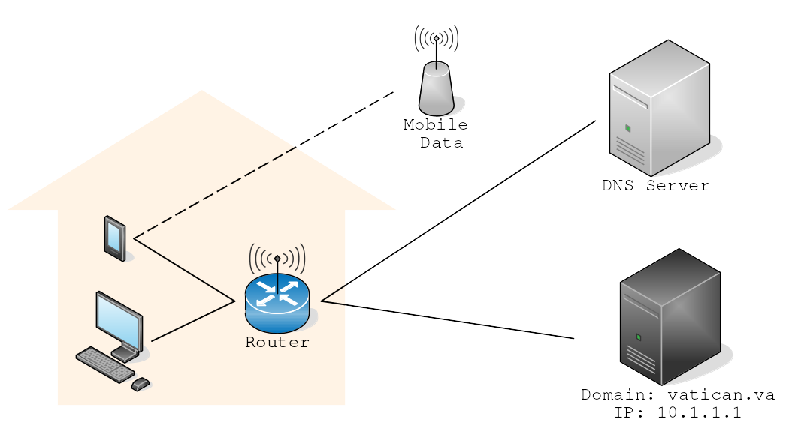

Network-Based Measures
Introduction
When it comes to technical solutions, the basic strategy is restricting access to harmful websites.
Within the scope of technical solutions, this document is going to focus on restricting access to websites.
DNS filtering
When it comes to restricting access DNS is the name of the game.

Key Terms
The following is a list of key terms in understanding how a home network works.
Shortened versions of the name are included in parentheses.
- IP address (IP)
-
Every device which accesses the Internet has an IP address.
Whenever one device wants to retrieve something from another device (e.g., a computer retrieving a web page from a server), the first needs to specify the IP of the latter.
An IP address typically looks like a period-separated list of 1-3 digit numbers (e.g.,
192.168.1.1, 12.34.56.78) or less commonly numbers/letters separated by colons (e.g., fd9d:7937:6c16::1).
- Domain name (domain)
-
The human-readable
address
for a website, like www.vatican.va or duckduckgo.com.
- Domain Name Service (DNS)
-
DNS is the process of translating a (typically readable) URL into an IP address.
For example, DNS translates
www.vatican.va into 185.152.70.33.
DNS is always performed by a device accessing a DNS server.
- DNS Server (DNS)
-
One can think of a DNS server as having a list of domain names and their corresponding IP addresses.
When a device wants to visit a website, it must contact a DNS to get the domain name translated into an IP.
Implementing DNS filtering
Whitelisting
Potential problems with DNS filtering
Key Terms
- Encryption
-
When a chunk of data is encrypted it is impossible to decipher its contents without the associated key (i.e., password).
This is generally used to tightly restrict who/what can read a specific piece of data.
Private DNS
DNS over HTTPS
Getting IP addresses directly
VPNs